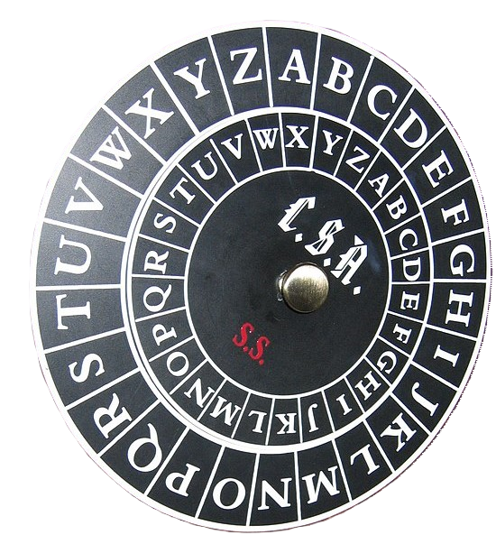
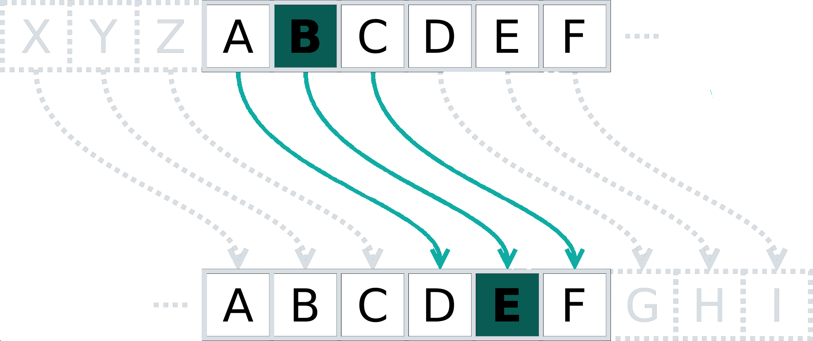
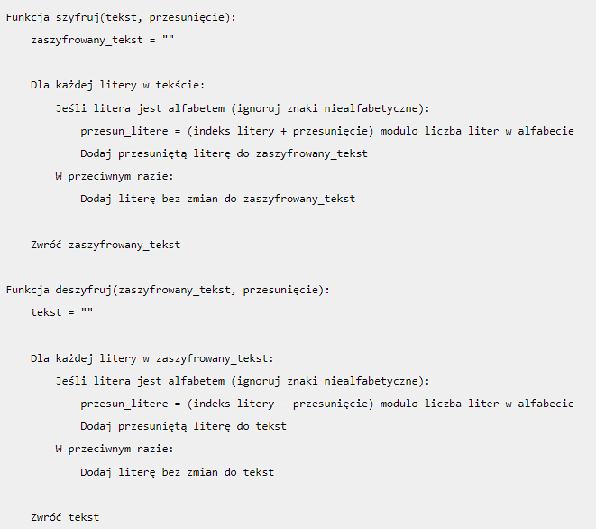

Szyfry przestawieniowe
Szyfry przestawieniowe to jedna z klasycznych metod szyfrowania. Charakteryzują się tym, że w zaszyfrowanym tekście występują wszystkie znaki z tekstu jawnego, ale w innej kolejności. Szyfry należące do tej grupy zmieniają kolejność liter w szyfrowanym tekście według określonego schematu.
Najprostszym przykładem szyfru przestawieniowego jest pisanie wspak. Inne przykłady to zamiana sąsiadujących liter czy przesunięcie spółgłosek o jedno miejsce. W obu przypadkach, kolejne pary znaków zamieniamy miejscami.
Szyfr płotkowy
Szyfr płotkowy to forma szyfru przestawieniowego, tekst jawny jest zapisywany w dół i po przekątnej na kolejnych rzędach wyimaginowanego płotu, a następnie porusza się w górę, gdy dotrzemy do dołu. Wiadomość jest następnie odczytywana w kolejnymi wierszami od góry.
Na przykład:
Tekst jawny: "KRYPTOGRAFIA"
Klucz: "3" (liczba wierszy)
| K | - | - | - | T | - | - | - | A | - | - | - |
| - | R | - | P | - | O | - | R | - | F | - | A |
| - | - | Y | - | - | - | G | - | - | - | I | - |
Szyfrogram: "KTARPORFAYGI"
Szyfr kolumnowy
W połowie XVII wieku Samuel Morland wprowadził wczesną formę transpozycji kolumnowej. Została ona dalej rozwinięta znacznie później, stając się bardzo popularna pod koniec XIX wieku i w XX wieku, z francuskimi wojskowymi, japońskimi dyplomatami i sowieckimi szpiegami korzystającymi z tej zasady.
W transpozycji kolumnowej, wiadomość jest zapisywana w rzędach o stałej długości,
a następnie odczytywana ponownie kolumna po kolumnie, a kolumny są wybierane w pewnym przetasowanym porządku.
Zarówno szerokość rzędów, jak i permutacja kolumn są zwykle definiowane przez słowo kluczowe.
Na przykład, słowo kluczowe ZEBRA ma długość 5 (więc rzędy mają długość 6), a permutacja jest definiowana przez
porządek alfabetyczny liter w słowie kluczowym. W tym przypadku, porządek byłby
“6 3 2 4 1”.
Na przykład:
Tekst jawny: "KRYPTOGRAFIA"
Klucz: "KOT" (3 kolumny, numerowanie kolumn 1 2 3)
| 1 | 2 | 3 |
| K | R | Y |
| P | T | O |
| G | R | A |
| F | I | A |
Szyfrogram: KPGFRTTIYOAA
Zaszyfruja dane!
Szyfry podstawieniowe
Szyfrowanie podstawieniowe to technika kryptograficzna, w której jednostki tekstu jawnego (niezaszyfrowanego) są zastępowane szyfrogramem (zaszyfrowanym tekstem) w określony sposób za pomocą klucza. “Jednostkami” mogą być pojedyncze litery, pary liter, trójki liter, mieszanki powyższych i tak dalej. Odbiorca odszyfrowuje tekst, wykonując odwrotny proces podstawienia, aby wydobyć oryginalną wiadomość. Współcześnie, ze względu na łatwość złamania, szyfry podstawieniowe nie są już używane do zapewnienia bezpieczeństwa komunikacji.

Szyfr Cezara
Jest to jedna z najprostszych technik szyfrowania, znana również jako szyfr przesuwający. Każda litera tekstu jawnego (niezaszyfrowanego) zastępowana jest inną, oddaloną od niej o stałą liczbę pozycji w alfabecie. Na przykład, jeżeli zdefiniujemy przesunięcie na “2”, litera “a” zostanie w takim szyfrze zastąpiona literą “c” (ponieważ “a” jest pierwszą literą alfabetu a “c” trzecią).

Zaszyfruj dane!
Psełdokod

Szyfry synchroniczne
Kryptografia symetryczna, znana również jako kryptografia z kluczem tajnym, wykorzystuje pojedynczy klucz zarówno do procesów szyfrowania, jak i deszyfrowania. Klucz ten nie jest powiązany z użytkownikiem (nadawcą lub odbiorcą wiadomości), a z wykonywaną operacją.